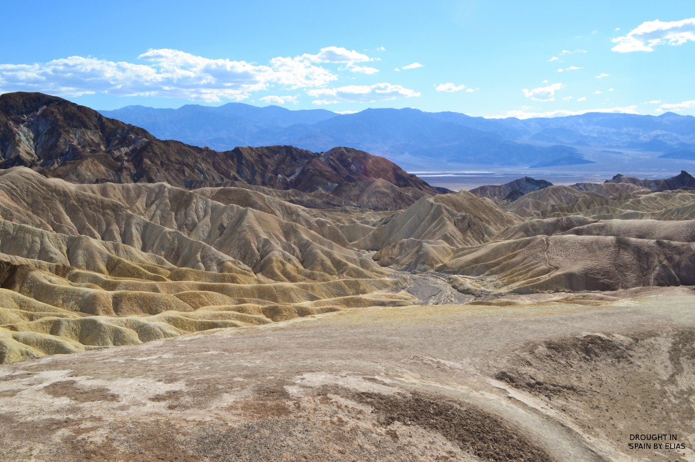
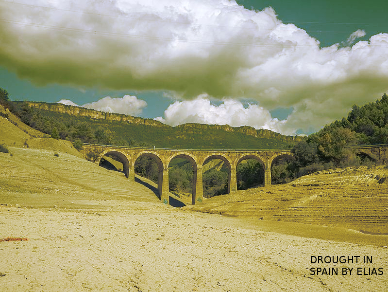

Aqui podemos ver un gran desierto. España está en riesgo de ver, cada vez mas, paisajes como este.

Esta imagen representa un puente por el que no pasa agua, sintoma de la sequia, problema cada vez mas preocupante en España.
Podemos ver un paisaje árido, otra vez con un puente sin rio como ejemplo.
En este video podemos apreciar el
Subir